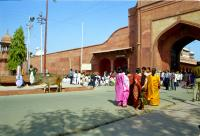

| Mardi 20 Février
Hier soir, on a mangé du riz dans un resto dans le Old Delhi. Les gens sont
pauvres en grande majorité dans ce quartier, mais cela ne choque. En tout cas,
cela ne nous a pas choqué. Peut-être parce qu'ils ont quand même l'air heureux.
Que ça bouge, ça remue. Et puis la majorité ne meurre pas de faim tout de même.
Mais ce matin, ce n'est pas la même chose. D'abord, il y a eu cette fillette
qui a frappé à la vitre du train pour avoir un peu d'argent. Mais partout, on
te conseille de ne pas donner aux gamins. Déjà parce que cela favorise la mendicité.
Frocément, si cela rapporte plus de faire la manche que de bosser, pourquoi
aller à l'école? En plus, il y a en Inde une groose partie de la mendicité qui
est organisée et récupérée par la mafia! Tu files un stylo à un gamin dans la
rue, il est revendu par son " protecteur " à la boutique du coin…
Et puis, en sortant de la ville en train, on a trouvé les bidonvilles que j'étais
étonné de ne pazs en venant de l'aéroport. Des gens, beaucoup de gens, qui vivent
à 50 mètres des rails. Ils sont là, à la sortie de la ville. Dans des cabanes
en planches pour certains, dans des taudis en briques pour d'autres. Certains
sous de grandes tentes, d'autres avec seulement quelques couvertures sous un
pont. Et partout, des tas dordures, des sacs plastiques qui jalonnenent la voie
du chemin de fer qui sert d'immense chiottes publiques. Mais bon, ils ne sont
pas forcèment malheureux ces gens là, hein, ils ne sont peut-être pas malheureux,
hein? Et qu'en je pense que demain, on va gueuler pour une merde de chien sur
le trottoir ou moi en ce moment même parce qu'il y a un courant d'air qui me
gèle le bras…
On arrive à Agra. Et ça y est, j'ai vu le Taj Mahal. Et même que c'était du
toit de la petite pension familiale où l'on loge. On l'a trouvée dans Le Routard.
Mais depuis qu'il a été écrit, les choses ont changé. Le prix de la visite a
augmenté, les taxes pour les gens qui y bossent aussi. Est-ce à cause de cela,
toujours est-il qu'il y a apparemment moins de touristes en ce moment. Du coup
le patron de la pension a plus ou moins arrêté son affaire. Il a gardé deux
chambres. Sa famille occupe le reste de la grande maison. Même si les murs sont
un peu défraichis, elle est sympa sa maison. Avec une petite cour intérieure,
et une terrasse sur le toit. De cette terrasse, j'ai vu le Taj Mahal. Mais cela,
je crois que je l'ai déjà dit. Va falloir quand même faire gaffe. Même s'il
a l'air vraiment sympa, le gars de la pension, je crois qu'il va essayer de
nous empoisonner. Et puis on risque aussi de se faire égorger, même pire (si,
pire qu'égorger, c'est possible, on peut t'égorger méchamment, et ça c'est pas
agréable). C'est pas un quartier sûr où l'on va. C'est le gars du rickshaw qui
nous l'a dit. Il faudrait aller dans un autre hôtel plus sûr... il n'essaierait
pas de nous arnaquer celui-là ?
Il y a une fille à la pension, c'est la soeur du boss. Elle est amusante, elle
nous a montré les photos de toute sa famille. Elle a 17 ans, elle a fini l'école
et elle trouve qu'avoir plein de soeurs ce n'est pas rigolo. Elle s'occupe desormais
des travaux de la maison. Elle est gentille comme tout. Mais si cela se trouve,
c'est elle qui va nous empoisonner.
L'apres-midi, ballade au fort rouge. Un énorme palais entouré de remparts,
le tout en grès rouge. Malgré l'intérêt que l'on peut porter à l'histoire de
cette forteresse en grès rouge (elle a servi de prison au gars qui a construit
le Taj Mahal), donc, malgré l'intérêt qu'on a porté à cette forteresse de grès
rouge (et le temps qu'on a passé a l'observer), elle ne nous a pas delivré son
secret : d'où lui vient son nom ? Le fort rouge ?
En rentrant, on prend un vélo-rickshaw. Deux rickshaw même et pour 5 roupies
seulement! A proposition nous semble louche c'est vraiment pas cher. En fait,
ils nous propose un marché: on ne paie presque rien, mais en échange on va voir
une ou deux boutiques à touristes. Celles-ci leurs donnent 10 roupies par clients
amené, même si on n'achète rien. En plus, ils leurs donnent 15 à 40 pourcents
sur les achats. Bonne affaire pour eux si on prend quelque chose. Comme il a
une bonne tête le papy qui pédale et que ça les fait bien marrer, lui et son
pote, de nous proposer cela, on n'a pas le courage de dire non. Et on ne regrète
pas. Ils nous amènent dans un magasin " approved by government ". Un titre que
n'importe qui peut s'octroyer puisque le " government " s'en fout. En entrant,
on voit un super éléphant en bois de rose haut de 50 cm. Magnifique. On aimerait
bien faire semblant d'acheter celui-là, quitte à faire semblant, autant que
cela nous plaise. Mais non. Le mec du magasin veut absolument nous filer un
tapis. "- It's a cadeau. For a friend. Je pense that my friend prefer the elephant
- No, une carpet, c'est mieux, very better le tapis". Et le voilà en train de
déballer au moins 10 ou 15 tapis, de toutes les tailles, de toutes les couleurs.
"Good quality! Directly from Cachemire, no intermediaire". Un vrai numéro! "
Je te montre une fois: je prends le tapis, je le jette, il retombe... par terre,
nickel! Attends, t'as pas bien vu, je te refais la démo ". Et encore, et encore…
"And it changes of color with la lumiere". Et nous, en train de tourner autour
du pauvre tapis qu'avait rien demandé à personne, et en train de pousser des
cris d'emerveillement sur la couleur qui passe du rouge à l'orange. Son numéro
était tellement au point, le ton de sa voix tellement grave. A mourir de rire!
Et en plus, on se fait engueulé quand on n'écoute pas assez à son goût ou lorsqu'on
prend une mauvaise décision. "He mister, come here, listen to me! Come and sit!
Take a tea! Yes, yes, take a tea, it's good. WHY dont you by the carpet. I pack
it for you". Il ne serait pas un peu obstiné celui-là?
Mercredi 21 fevrier.
On se lève a 6H00, une bonne demi-heure avant le lever du soleil pour profiter
des couleurs et de la solitude. C'est comme cela que Marion avait déjà fait
il y a 6 ans. Et c'est donc comme cela que l'on fait maintenant. Mais, soit
ses souvenirs l'ont trahie, soit les choses ont changé. Parce qu'à cette heure,
il y a déjà pas mal de monde à l'intérieur du Taj Mahal. Tant pis pour les photos.
Grand moment tout de même, lorsque l'on s'approche de l'immense porte d'entrée
et que le Taj Mahal se dévoile à nos yeux. Je ne suis pas du genre à m'extasier
devant une tombe, mais il faut reconnaitre qu'il est plutot impressionnant ce
tombeau! Rien à redire, ils avaient du goût ces architectes Mogholes (et pas
mongoles) qui ont conçu ce monument époustoufflant. Et tout cela pour une minette…
Si, si. Le gars (Shah Jahan, un empereur) a perdu sa femme magnifique dont il
était éperdument amoureux. Fou de chagrin et ne sachant pas quoi faire de son
temps, il décide de la construction de ce palais. Il convoque un architecte
moghole et lui ordonne de construire un tombeau à la mesure de sa peine. Comme
les travaux traînent et que le boulot ne lui convient pas -pas étonnant, vu
le mal qu'on a pour trouver ne serait-ce qu'un bon plomber- l'empereur tue la
femme de l'architecte pour qu'il ressente la même douleur et qu'il trouve l'inspiration.
T'as compris, gare à ta femme, plombier! Jeveux et j'éxige un robinet qui ne
fuit plus à la mesure de l'amour que j'ai pour ma femme! Et le Taj Mahal est
né 22 ans plus tard.
Saisissant! Tout comme la première fois que je l'ai vu il y a 5 ou 6 ans, j'ai
été époustoufflée par la beauté du Taj Mahal. On le découvre depuis le porche
du " château " rouge qui le précède -rien à voir avec le fort du même nom-.
D'un coup, il s'offre majestueusement à nos yeux écarquillés. On en reste cloué
sur place. Ce tombeau de marbre blanc, avec son allure royale semble tout droit
sorti des contes des 1001 nuits. Au petit matin, il est simplement fabuleux,
blanc sur le fond blanc de l'aube qui se lève. Avant l'apparition du soleil
qui vient peu à peu le caresser sur le flanc. Grandiose puisqu'il n' y a rien
derrière pour gacher le plaisir des yeux, rien que le ciel. Il semble flotter
dans le ciel sur un tapis volant avec les quatre hauts minaret qui l'entourent.
Devant, les bassins où son reflet joue. Sur les flancs, deux " château " rouges.
Tout est parfaitement symétrique par rapport au tombeau de la reine, au centre
du Taj Mahal. Tout, sauf le tombeau de son Shah Jahan, son mari. Enfin bon,
il y a quand même deux femmes mortes à l'origine. Remettons les choses à leur
place. Il y a quand même des pays et des époques où il ne fait pas bon d'être
une femme!
Suite du voyage : Premier jour à Jaïpur
|
Inde
Agra
|
Inde
Agra
|
Inde
Agra
|
Inde
Agra
|

Inde
Agra
|
Inde
Agra
|
Inde
Agra
|

Inde
Agra
|
|
|